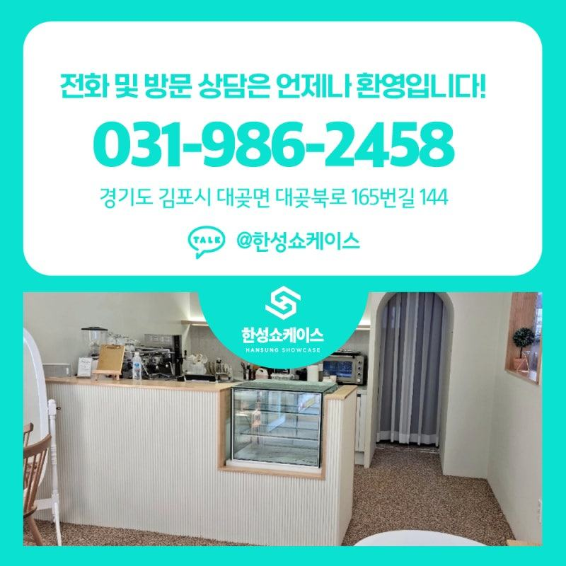
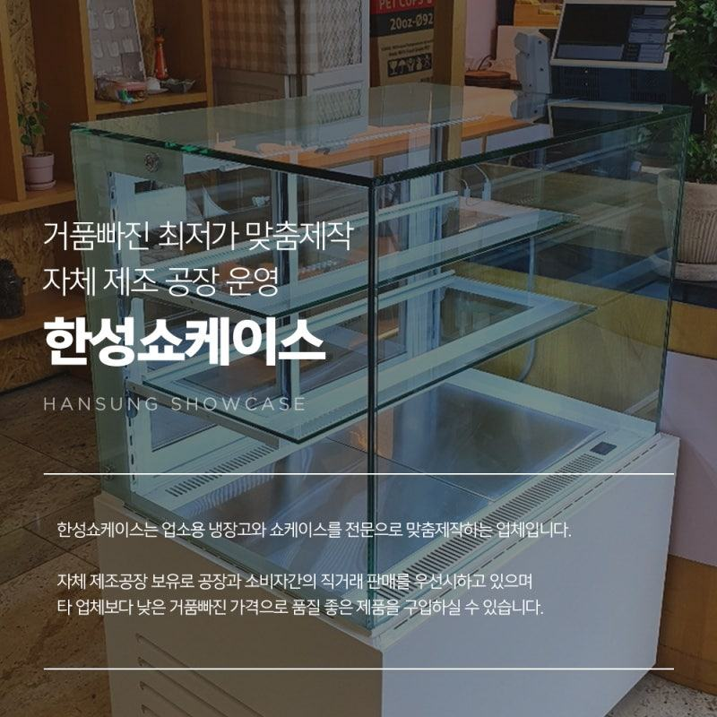
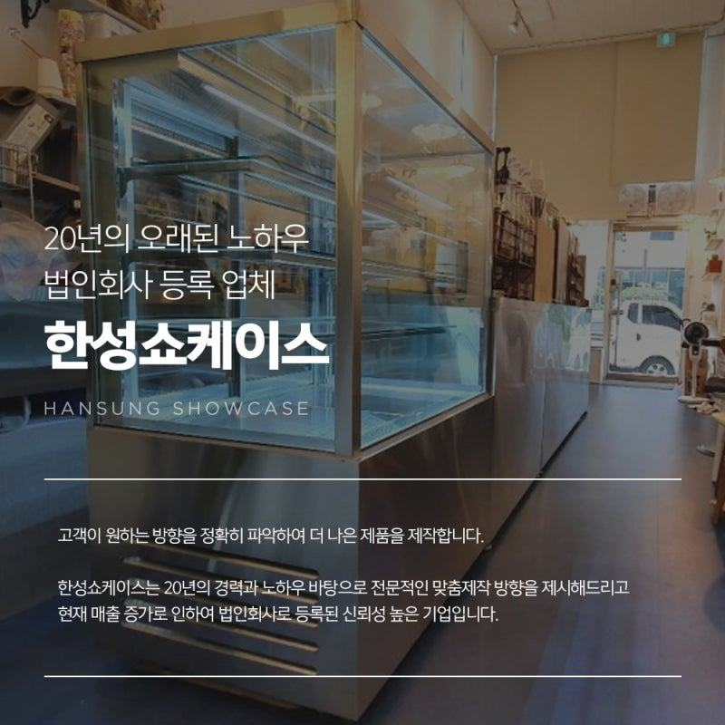
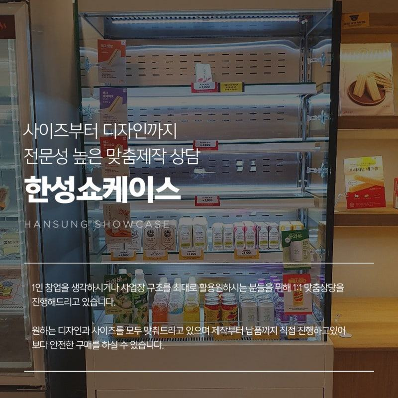
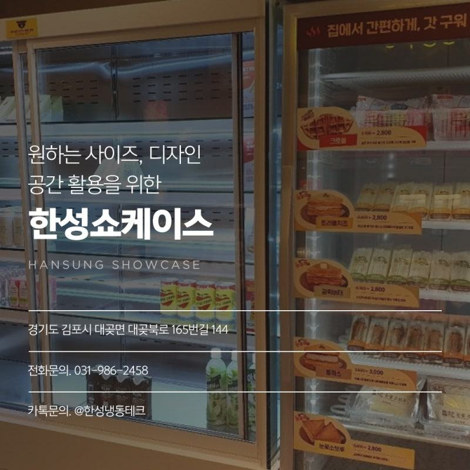
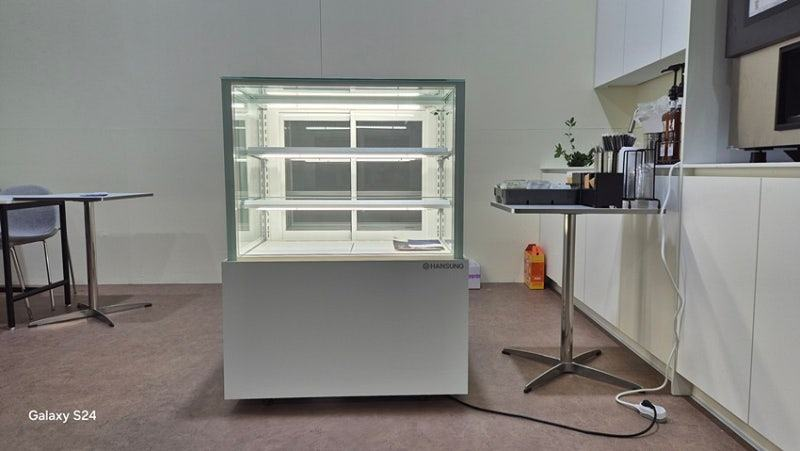
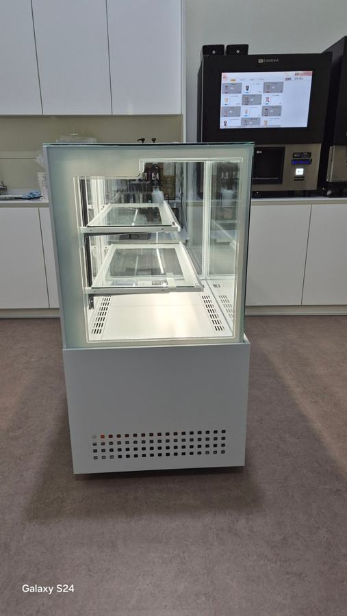

제과쇼케이스
카페쇼케이스 배치, 주문 줄과 카운터 사이에서 정하는 위치

카페쇼케이스는 손님이 주문을 기다리는 줄에서 자연스럽게 내려다보이고, 포스 바로 앞이나 옆에서 결제 직전에 눈에 들어오는 자리에 두는 것이 기본입니다. 동시에 직원이 뒤에서 디저트를 꺼내기 편하고, 커피 머신 열이나 창가 햇빛이 직접 닿지 않는 위치인지 함께 확인하셔야 합니다.
안녕하세요. 카페 인테리어에 맞춘 쇼케이스 냉장고를 디자인하고 제작하는 한성쇼케이스입니다.
카페를 준비하시는 사장님들은 쇼케이스 디자인에는 공을 많이 들이시는데, 정작 어디에 둘지는 인테리어 도면에 남는 자리로 정해지는 경우가 많습니다.
그러다 보니 예쁜 쇼케이스가 손님 동선에서 비켜나 있어 디저트가 기대만큼 나가지 않는다는 이야기를 듣게 되죠.
카페에서 디저트는 대부분 음료 주문과 함께 덤으로 결정됩니다. 손님이 메뉴판을 보며 줄을 서 있는 짧은 시간에 쇼케이스가 눈에 들어와야 한 접시가 더 나갑니다.
오늘은 카페쇼케이스를 어디에 두면 좋은지 손님 동선, 직원 동선, 환경 조건 순서로 정리해 보겠습니다.
1. 손님 줄이 지나가는 자리
출입문에서 카운터까지 손님이 걸어오는 길, 그리고 주문을 기다리며 서는 줄의 위치를 먼저 그려 보세요.
쇼케이스는 이 줄 옆에 나란히 두거나 포스 바로 앞에 두어, 기다리는 동안 디저트를 충분히 볼 수 있게 하는 것이 좋습니다.
줄이 쇼케이스를 등지고 서게 되는 배치는 피하셔야 합니다. 손님이 메뉴판을 보느라 고개를 든 상태라면 쇼케이스 높이가 너무 낮지 않은지도 함께 확인해 보세요.
메뉴판과 쇼케이스가 같은 방향에 있으면 시선이 자연스럽게 아래로 내려옵니다.
- 출입문에서 카운터까지 손님 걸음을 그려 보세요.
- 주문 대기 줄 옆이나 포스 앞에 두세요.
- 메뉴판과 같은 방향에 두세요.
2. 카운터 높이와 직원 동선
카운터 일체형으로 쇼케이스를 넣는다면 카운터 상판 높이와 쇼케이스 높이를 맞춰야 선이 깔끔합니다. 쇼케이스가 카운터보다 너무 높으면 직원과 손님 사이가 막혀 답답해 보이고, 너무 낮으면 디저트가 잘 보이지 않습니다.
직원은 주문을 받고, 디저트를 꺼내 접시에 담고, 음료를 만드는 일을 오가며 합니다. 쇼케이스 뒷문과 디저트 플레이팅 자리, 포스가 몇 걸음 안에 모여 있어야 피크 시간에 동선이 꼬이지 않습니다.


3. 커피 머신 열과 창가 햇빛 피하기
에스프레소 머신과 온수기, 오븐은 계속 열을 냅니다. 쇼케이스를 바로 옆에 붙이면 기계실 쪽에 뜨거운 공기가 몰려 냉각이 더뎌지고 유리에 김이 서리기 쉽습니다.
최소한 기계실 통풍구가 열기를 마주하지 않도록 방향을 잡아 주세요.
통유리 창가는 밖에서도 디저트가 보여 좋아 보이지만, 오후 햇빛이 들면 유리가 데워져 생크림 디저트 관리가 어려워집니다.
창가 배치를 원하신다면 햇빛이 드는 시간대를 확인하고 블라인드나 차양을 함께 계획하세요.
4. 매장 유형별로 달라지는 배치
테이크아웃 위주의 작은 카페는 포스 앞 한 자리에 쇼케이스를 두고, 병 음료나 샌드위치를 손님이 직접 꺼내는 냉장고를 픽업대 근처에 두면 동선이 짧아집니다.
좌석이 많은 디저트 카페라면 쇼케이스를 매장 중심에 가깝게 두어 앉아 있는 손님에게도 보이게 하는 방법이 있습니다.
앉아서 보다가 추가 주문을 하러 오는 경우가 생기기 때문입니다.
- 테이크아웃 매장은 포스 앞과 픽업대를 나눠 쓰세요.
- 좌석형 매장은 앉은 자리에서 보이는지 확인하세요.
체크리스트
- 주문 대기 줄과 쇼케이스 방향
- 메뉴판과 같은 시선 방향
- 카운터 상판과 높이 맞춤
- 뒷문·플레이팅·포스 거리
- 커피 머신 열과 통풍구 방향
- 창가 햇빛 시간대
현장에서 자주 보는 경우: 감성 1인 카페에서 단순 보관함이 된 쇼케이스
가구와 식기, 작은 소품까지 분위기에 맞춰 고른 1인 카페에서 쇼케이스만 투박한 기성품이 들어가 있거나, 규격이 맞지 않아 구석에 밀려 있는 경우를 자주 봅니다.
이러면 쇼케이스는 손님 시선을 끄는 역할을 잃고 디저트를 넣어 두는 보관함에 머물게 됩니다.
카페쇼케이스는 온도를 지키는 것과 함께 구매 욕구를 불러일으켜야 하는 장비라, 인테리어와 어울리게 맞춘 제품을 원하는 자리에 두는 것이 중요합니다.
디자인, 색상, 크기, 단 개수를 정해 공장에서 제작하고, 전문 기사가 방문해 설치하면서 사용 방법도 다시 안내해 드립니다.





자주 묻는 질문
카운터 안쪽에 매립하면 공간이 더 넓어지나요?
카운터와 일체로 넣으면 선이 깔끔해지고 공간도 정돈됩니다. 다만 기계실 통풍 경로를 확보해야 하니 인테리어 단계에서 함께 설계하시는 게 좋습니다.
쇼케이스를 두 대로 나누는 게 나을까요?
케이크처럼 직원이 꺼내 드리는 디저트와 손님이 직접 꺼내는 음료·샌드위치를 함께 판다면 나누는 편이 동선에 유리합니다.
매장 크기와 메뉴 구성을 보고 결정하세요.
배치 상담도 받을 수 있나요?
매장 도면이나 사진을 보내 주시면 크기와 위치를 함께 검토해 드립니다. 공장에 방문하시면 제작 중인 제품도 보실 수 있으니 대표전화 031-986-2458로 문의해 주세요.
매장 조건에 맞춰 만드는 한성쇼케이스
원하시는 제품 사진과 설치할 공간 사진만 보내 주셔도 매장에 맞는 구성을 추천해 드립니다.
- 전국 240여 개 A/S 전담 센터 운영
- 본사 대량 자재 매입으로 품질 대비 합리적인 가격
- 유럽제·삼성 냉각 콤프레셔 적용
- 국내 최초 쇼케이스 전문 디자이너 상주
매장 폭과 원하는 진열 구성을 알려 주세요. 실측과 견적을 안내해 드립니다.
031-986-2458